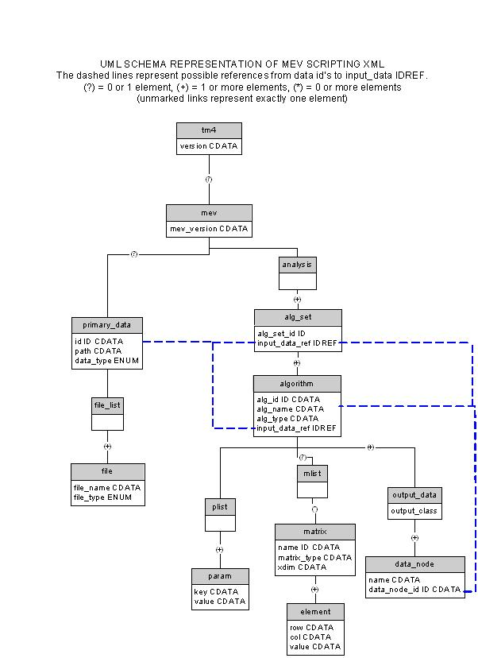

Appendix: Distance Metrics
DTD
<!--<?xml encoding="UTF-8" ?> -->
<!ELEMENT TM4ML (midas?, dbi_controller?, mev?)>
<!ATTLIST TM4ML version CDATA #REQUIRED>
<!-- midas and dbiController place holders -->
<!ELEMENT midas EMPTY>
<!ELEMENT dbi_controller EMPTY>
<!ELEMENT mev (primary_data, analysis)>
<!ATTLIST mev version CDATA #REQUIRED>
<!ELEMENT analysis (alg_set+)>
<!ELEMENT alg_set (algorithm*)>
<!ATTLIST alg_set set_id CDATA #REQUIRED
input_data_ref CDATA #REQUIRED>
<!ELEMENT algorithm (plist, mlist?, output_data)>
<!ATTLIST algorithm alg_id CDATA #REQUIRED
input_data_ref CDATA #REQUIRED
alg_name CDATA #REQUIRED
alg_type ( cluster | cluster-genes | cluster-experiments | data-visualization | data-adjustment | cluster-selection | data-normalization ) #REQUIRED>
<!ELEMENT plist (param*)>
<!ELEMENT param EMPTY>
<!ATTLIST param key CDATA #REQUIRED
value CDATA #REQUIRED>
<!ELEMENT mlist (matrix*)>
<!ELEMENT matrix (element+)>
<!ATTLIST matrix name CDATA #REQUIRED
type ( int-array | string-array | FloatMatrix ) #REQUIRED
row_dim CDATA #REQUIRED
col_dim CDATA #REQUIRED>
<!ELEMENT element EMPTY>
<!ATTLIST element row CDATA #REQUIRED
col CDATA #REQUIRED
value CDATA #REQUIRED>
<!ELEMENT output_data (data_node+)>
<!ATTLIST output_data output_class
( single-output | multi-cluster-output | multi-gene-cluster-output
| multi-expteriment-cluster-output | partition-output) #REQUIRED>
<!-- single-output indicates that the result is one set
(usually the result of normalization, filtering, or transform.
multi-cluster-output is produced by many clustering algorithms and
represents multiple clusters in which each cluster contains vectors
that are similar. There is no clear ordering of results.
Generally to act on this output a selection algorithm should be
used to select a cluster.
partition-output is a multi cluster output where the clusters are
ordered and cluster members have a paricular shared quality.
e.g. Significant genes by a statistical algorithm, elements
partitioned by classification algorithms. -->
<!ELEMENT data_node EMPTY>
<!ATTLIST data_node data_node_id CDATA #REQUIRED
name CDATA #REQUIRED>
<!ELEMENT primary_data (file_list?)>
<!ATTLIST primary_data id CDATA #REQUIRED
data_type ( mev | tav | stanford | gpr | affy_abs |
affy_ref | affy_mean) #IMPLIED>
<!-- want an enumeration of data types (mev|tav|stanford|affy|gpr) -->
<!ELEMENT file_list (file+)>
<!ELEMENT file EMPTY>
<!ATTLIST file file_path CDATA #REQUIRED
file_type ( data | annot | preference ) #REQUIRED>
DTD UML Schema
